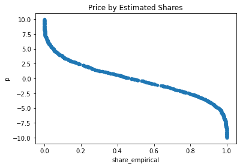
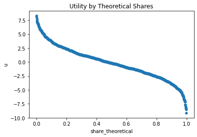

import random
import statsmodels.api as sm
import numpy as np
import pandas as pd
import scipy.stats as stats
from scipy.optimize import minimize_scalar, minimize
from IPython.display import Latex
from stargazer.stargazer import Stargazer
from IPython.core.display import HTMLThis notebook is a python port of some of the code in “Learning Microeconometrics with R” by Christopher P Adams. It corresponds to the blog post: https://nathanielf.github.io//post/mle_utility_and_choice/
Revealed Preference
Revealed Preference Axiom If there are two choices, A and B, and we observe a person choose A, then her utility from A is greater than her utility from B.
So in a simple binary case we can estimate the utility from differences expresed over the purchase prices.When \(A\) is purchased over \(B\) we know that
\[ u_A - p_A < u_B - p_B \]
Normalising to a particular reference price, say B, We set \(p = p_A - p_B\) and \(utility = u_A - u_B\)
N = 1000
np.random.seed(0)
u = np.random.normal(0, 3, N)
u = np.sort(u)
p_B = 2
# Share cases where utility is positive i.e. where A is chosen
np.mean(u - p_B > 0)0.236This is a simple example of where we can use assumptions of revealed preference and a hypothetical range of utility
# Random distribution of price points
p = np.random.uniform(-10, 10, N)
share_empirical = np.zeros(shape=(len(p), 1))
share_theoretical = np.zeros(shape=(len(p), 1))
ecdf = ECDF(u)
for i in range(0, len(p)):
# share of market with a positive utility for A over B at a given price point
share_empirical[i] = np.mean(u-p[i] > 0)
# Get the Empirical cdf fro U
share_theoretical = 1-ecdf(u)
pd.DataFrame({'share_empirical': share_empirical.flatten(), 'p': p}).plot(x='share_empirical',
y='p', kind="scatter",
title="Price by Estimated Shares")
pd.DataFrame({'share_theoretical': share_theoretical.flatten(), 'u':u }).plot(x='share_theoretical',
y='u', kind="scatter",
title="Utility by Theoretical Shares")<matplotlib.axes._subplots.AxesSubplot at 0x149dc7198>

However in both cases we made use of the fact that we knew the distribution of the utilities
The Problem: Modelling Discrete Choice by Latent Utility Metrics
Some assumptions about the form of the utility distribution are crucial as our modeling efforts will go wrong if we know nothing about the latent utilities. We assume that the latent utility can be expressed as by the revealed preferences i.e. as the share or proportion of choices made by the customers.
The utility is some function of product and consumer’s properties, perhaps mostly driven by price
\[ utility = \mathbf{X'}\beta + e\]
and market share is an expression of that utility \[ demand_A = utility_{A} > 0 \]
In a choice context we’re trying to determine if the implicit utility measure is sufficient to drive a purchase, and as such OLS models are inappropriate
N = 1000
a = 2
b = -3
e = np.random.normal(0, 1, N)
consumer_desc = np.random.uniform(3, 1, N)
consumer_desc1 = np.random.uniform(2, 5, N)
utility = 2 + 3*consumer_desc + -4*consumer_desc1 + e
## Predicting choice over two options
demand_A = utility > 0
X = pd.DataFrame({'product_desc': consumer_desc, 'product_desc1': consumer_desc1})
X = sm.add_constant(X)
lm1 = sm.OLS(demand_A,X)
lm1_results = lm1.fit()
print(lm1_results.summary())
print(round(lm1_results.params, 5)) OLS Regression Results
==============================================================================
Dep. Variable: y R-squared: 0.200
Model: OLS Adj. R-squared: 0.198
Method: Least Squares F-statistic: 124.5
Date: Sat, 20 Feb 2021 Prob (F-statistic): 5.42e-49
Time: 16:01:07 Log-Likelihood: 58.448
No. Observations: 1000 AIC: -110.9
Df Residuals: 997 BIC: -96.17
Df Model: 2
Covariance Type: nonrobust
=================================================================================
coef std err t P>|t| [0.025 0.975]
---------------------------------------------------------------------------------
const 0.2095 0.040 5.291 0.000 0.132 0.287
product_desc 0.1120 0.013 8.939 0.000 0.087 0.137
product_desc1 -0.1045 0.008 -12.630 0.000 -0.121 -0.088
==============================================================================
Omnibus: 472.919 Durbin-Watson: 1.983
Prob(Omnibus): 0.000 Jarque-Bera (JB): 1999.877
Skew: 2.298 Prob(JB): 0.00
Kurtosis: 8.183 Cond. No. 23.8
==============================================================================
Warnings:
[1] Standard Errors assume that the covariance matrix of the errors is correctly specified.
const 0.20953
product_desc 0.11204
product_desc1 -0.10449
dtype: float64This stems from the fact that we’re’trying to estimate a conditional probability over a binary choice not a continuous measure. The revealed preference assumption says that we can predict the purchase if the utility of good is positive.
\[Pr(demand_A = 1) = utility > 0 \] \[= Pr(\mathbf{X'}\beta + e > 0) \] \[ = Pr(e > - \mathbf{X'}\beta ) \] \[ = 1 - F(\mathbf{X'}\beta ) \]
where \(F\) is the distribution of the unobserved random variable \(e\). The challenge is using the correct distribution as this feeds the method of statistical estimation of the parameters \(\beta\)
Maximum Likelihood Fits over Candidate Distributions
There are a number of candidate distributions which might serve to replace \(F\) and estimate the share of purchases
def log_binomial_dist(params, *args):
p = params[0]
p_hat = args[0]
N = args[1]
return -((p_hat*N)*np.log(p) + (1-p_hat)*N*np.log(1-(p)))
res = minimize(log_binomial_dist, x0 = [.1], args =(.34, 100), bounds = ((0, .99),))
print(res)
fun: 64.10354778811556
hess_inv: <1x1 LbfgsInvHessProduct with dtype=float64>
jac: array([0.])
message: b'CONVERGENCE: NORM_OF_PROJECTED_GRADIENT_<=_PGTOL'
nfev: 16
nit: 6
njev: 8
status: 0
success: True
x: array([0.33999999])def ll_ols(params, *args):
X, y = args[0], args[1]
beta = [params[0], params[1], params[2]]
mu, sd, = params[3], params[4]
z = (y - X.dot(beta)) / sd
log_lik = -sum(np.log(stats.norm.pdf(z)) - np.log(sd))
return log_lik
x = np.random.normal(5, 2, 1000)
x1 = np.random.normal(6, 1, 1000)
x2 = np.random.uniform(2, 7, 1000)
y = 1 + .3*x + 5*x1 + np.random.normal(0, 1, 1000)
X1 = pd.DataFrame({'consumer_desc': x, 'consumer_desc1': x1})
X1 = sm.add_constant(X1)
res = minimize(ll_ols, x0 =[2, 1, 4, 2, 1], method = 'Nelder-Mead', args =(X1, y))
print(res) final_simplex: (array([[1.27170093, 0.28846111, 4.97078397, 2.33608166, 0.98080792],
[1.27163611, 0.28845751, 4.97079439, 2.33611095, 0.98081281],
[1.27179597, 0.28845924, 4.97076792, 2.33606271, 0.98080085],
[1.27178217, 0.28845315, 4.97077749, 2.33606068, 0.98081083],
[1.2716755 , 0.28844586, 4.97079715, 2.33609652, 0.98080788],
[1.27174903, 0.28845715, 4.97077654, 2.33606353, 0.98081551]]), array([1399.55005084, 1399.55005089, 1399.55005094, 1399.55005095,
1399.55005095, 1399.55005106]))
fun: 1399.5500508414766
message: 'Optimization terminated successfully.'
nfev: 384
nit: 238
status: 0
success: True
x: array([1.27170093, 0.28846111, 4.97078397, 2.33608166, 0.98080792])def log_probit_dist(params, *args):
X, y = args[0], args[1]
beta = [params[0], params[1], params[2]]
mu, sd, = params[3], params[4]
Xb = X.dot(beta)
q = 2*y-1
log_lik = np.log(stats.norm.cdf(q*Xb))
return -sum(log_lik)
### Optimise the probit model for determining the parameters required toe estimate the underlying utility
### True values of the parameters 2, 3, -4
res = minimize(log_probit_dist, x0 =[0, 0 ,0 , 0, 1], args =(X, demand_A), options={'disp': True})
print(res)Optimization terminated successfully.
Current function value: 94.044202
Iterations: 17
Function evaluations: 108
Gradient evaluations: 18
fun: 94.04420183563171
hess_inv: array([[ 0.72799404, -0.03552851, -0.26060106, 0. , 0. ],
[-0.03552851, 0.09513159, -0.08023828, 0. , 0. ],
[-0.26060106, -0.08023828, 0.18756252, 0. , 0. ],
[ 0. , 0. , 0. , 1. , 0. ],
[ 0. , 0. , 0. , 0. , 1. ]])
jac: array([ 3.81469727e-06, -9.53674316e-06, 0.00000000e+00, 0.00000000e+00,
0.00000000e+00])
message: 'Optimization terminated successfully.'
nfev: 108
nit: 17
njev: 18
status: 0
success: True
x: array([ 2.14197608, 2.42768647, -3.51990129, 0. , 1. ])These estimates are still incorrect but an awful lot closer than the fits achieved by the ols model in the first section. We can validate the above optimisation against the inbuilt model of statsmodels
probit_mod = sm.Probit(demand_A, X)
probit_res = probit_mod.fit()
probit_margeff = probit_res.get_margeff()
print('Parameters: ', probit_res.params)
print('Marginal effects: ')
print(probit_margeff.summary())Optimization terminated successfully.
Current function value: 0.094044
Iterations 10
Parameters: const 2.141972
product_desc 2.427687
product_desc1 -3.519900
dtype: float64
Marginal effects:
Probit Marginal Effects
=====================================
Dep. Variable: y
Method: dydx
At: overall
=================================================================================
dy/dx std err z P>|z| [0.025 0.975]
---------------------------------------------------------------------------------
product_desc 0.1285 0.011 12.137 0.000 0.108 0.149
product_desc1 -0.1863 0.015 -12.674 0.000 -0.215 -0.157
=================================================================================McFaddan’s BART Discrete Choice Model
The idea is a generalisation of the above to estimate the difference in utilities across multiple products.
\[ U_{i,j} = \mathbf{X'}_{i, j}\beta + v_{i,j} \]
where the each individual’s \(i\) utility for a given good \(j\) is expressed as a linear weighted function of the product characteristics \(\mathbf{X}\). Since we need to predict demand based on utility we’re really interested in estimating the differnce in utility
\[U_{i,A} > U_{i, B} \]
just when
\[ \mathbf{X'}_{i, A}\beta + v_{i,A} > \mathbf{X'}_{i, B}\beta + v_{i,B}\]
or
\[ v_{i,A} - v_{i,B} > - (\mathbf{X'}_{i, A} - \mathbf{X'}_{i, B})\beta \]
but then the probability of demand is just
\[Pr(demand_A = 1 | \mathbf{X'}_{i, A}, \mathbf{X'}_{i, B}) = Pr\Bigg( v_{i,A} - v_{i,B} > - (\mathbf{X'}_{i, A} - \mathbf{X'}_{i, B})\beta \Bigg) \] \[ = Pr\Bigg( -v_{i,A} - v_{i,B} < (\mathbf{X'}_{i, A} - \mathbf{X'}_{i, B})\beta \Bigg) \] \[ = F\Bigg( (\mathbf{X'}_{i, A} - \mathbf{X'}_{i, B})\beta \Bigg) \]
An Example in Two Products & Two Models
N = 100
X_A = sm.add_constant(np.random.rand(N,2))
X_B = sm.add_constant(np.random.rand(N, 2))
beta = np.array([1, -2, 3])
#probit we only need one normal error term since sums of normals are normal
v = np.random.normal(0, 1, N)
y = (X_A.dot(beta) - X_B.dot(beta)) + v > 0
X_diff = X_A - X_B
X_diff[:, 0] = 1
X_diff = pd.DataFrame(X_diff, columns=['const', 'product_desc', 'product_desc1'])Again we can try two classification algorithms which attempt to characterise the error terms \(v_{1}, v_{2}\) that the McFaddan model assumes
probit_mod = sm.Probit(y, X_diff)
probit_res = probit_mod.fit()
probit_margeff = probit_res.get_margeff()Optimization terminated successfully.
Current function value: 0.426413
Iterations 6v1 = np.random.weibull(1, N)
v2 = np.random.weibull(1, N)
y = (X_A.dot(beta) - X_B.dot(beta)) + (v1 - v2) > 0
logit_mod = sm.Logit(y, X_diff)
logit_res = logit_mod.fit()
logit_margeff = logit_res.get_margeff()Optimization terminated successfully.
Current function value: 0.499093
Iterations 6stargazer = Stargazer([probit_res, logit_res])
stargazer.custom_columns(['Probit Model', 'Logit Model'], [1, 1])
#stargazer.add_custom_notes([str(probit_margeff.summary()), str(logit_margeff.summary())])
HTML(stargazer.render_html())| Dependent variable:y | ||
| Probit Model | Logit Model | |
| (1) | (2) | |
| const | -0.255 | -0.049 |
| (0.156) | (0.246) | |
| product_desc | -1.491*** | -2.157*** |
| (0.445) | (0.690) | |
| product_desc1 | 2.964*** | 3.833*** |
| (0.578) | (0.888) | |
| Observations | 100 | 100 |
| R2 | ||
| Adjusted R2 | ||
| Residual Std. Error | 1.000 (df=97) | 1.000 (df=97) |
| F Statistic | (df=2; 97) | (df=2; 97) |
| Note: | *p<0.1; **p<0.05; ***p<0.01 | |
Generalising to Multiple choices: The Multinomial Distribution
np.random.seed(100)
N = 1000
mu = [0,0]
rho = 0.1
cov = [[1, rho], [rho, 1]]
# u is N*2
u = np.random.multivariate_normal(mu, cov, 1000)
x1 = np.random.uniform(0, 1, size=(N,2)) #np.random.rand(N,2)
x2 = np.random.uniform(0, 1, size=(N,2)) #np.random.rand(N,2)
U = -1 + -3*x1 + 4*x2 + u
y = np.zeros(shape=(N, 2))
y[:,0] = ((U[:,0] > 0) & (U[:,0] > U[:,1]))
y[:,1] = (U[:,1] > 0 & (U[:,1] > U[:,0]))
W1 = pd.DataFrame({'x1':x1[:,0], 'x2':x2[:,0]})
W2 = pd.DataFrame({'x1':x1[:,1], 'x2':x2[:,1]})
Optimization terminated successfully.
Current function value: 542.609688
Iterations: 185
Function evaluations: 338 final_simplex: (array([[-1.74855767, -5.18018459, 7.07552039],
[-1.74856002, -5.18016799, 7.07549515],
[-1.74856866, -5.18022325, 7.07555337],
[-1.74862589, -5.18016727, 7.07561422]]), array([542.60968847, 542.60968847, 542.60968848, 542.60968848]))
fun: 542.6096884689198
message: 'Optimization terminated successfully.'
nfev: 338
nit: 185
status: 0
success: True
x: array([-1.74855767, -5.18018459, 7.07552039])y_full = np.ones(shape=(N*2,1))
class_1 = np.where(((U[:,0] > 0) & (U[:,0] > U[:,1])), 'class_1', 'class_0')
class_2 = np.where((U[:,1] > 0 & (U[:,1] > U[:,0])), 'class_2', 'class_0')
y_full = np.append(class_1, class_2)
W_full = sm.add_constant(W1.append(W2)).reset_index(drop=True)
mn_logit = sm.MNLogit(y_full, W_full)
mn_logit_res = mn_logit.fit()
mn_logit_res.summary()Optimization terminated successfully.
Current function value: 0.630391
Iterations 7| Dep. Variable: | y | No. Observations: | 2000 |
|---|---|---|---|
| Model: | MNLogit | Df Residuals: | 1994 |
| Method: | MLE | Df Model: | 4 |
| Date: | Thu, 25 Feb 2021 | Pseudo R-squ.: | 0.2924 |
| Time: | 21:23:52 | Log-Likelihood: | -1260.8 |
| converged: | True | LL-Null: | -1781.9 |
| Covariance Type: | nonrobust | LLR p-value: | 2.587e-224 |
| y=class_1 | coef | std err | z | P>|z| | [0.025 | 0.975] |
|---|---|---|---|---|---|---|
| const | -2.6666 | 0.219 | -12.201 | 0.000 | -3.095 | -2.238 |
| x1 | -4.7724 | 0.315 | -15.143 | 0.000 | -5.390 | -4.155 |
| x2 | 6.2800 | 0.360 | 17.461 | 0.000 | 5.575 | 6.985 |
| y=class_2 | coef | std err | z | P>|z| | [0.025 | 0.975] |
| const | -2.7293 | 0.212 | -12.865 | 0.000 | -3.145 | -2.313 |
| x1 | -4.4876 | 0.299 | -15.004 | 0.000 | -5.074 | -3.901 |
| x2 | 6.4438 | 0.348 | 18.497 | 0.000 | 5.761 | 7.127 |
from scipy.special import softmax
def cdf(W, beta):
Wb = np.dot(W, beta)
eXB = np.exp(Wb)
eXB = eXB /eXB.sum(1)[:, None]
return eXB
def take_log(probs):
epsilon = 1e-20
return np.log(probs)
def calc_ll(logged, d):
ll = d * logged
return ll
def ll_mn_logistic(params, *args):
y, W, n_params, n_classes = args[0], args[1], args[2], args[3]
beta = [params[i] for i in range(0, len(params))]
beta = np.array(beta).reshape(n_params, -1, order='F')
beta[:,0] = [0 for i in range(0, n_params)]
## onehot_encode
d = pd.get_dummies(y, prefix='Flag').to_numpy()
probs = cdf(W, beta)
logged = take_log(probs)
ll = calc_ll(logged, d)
return -np.sum(ll)
n_params = 3
n_classes = 3
z = np.random.rand(3,3).flatten()
#probs = ll_mn_logistic(list(z), *[y_full, W_full, n_params, n_classes])
res = minimize(ll_mn_logistic, x0 =z, args =(y_full, W_full, n_params, n_classes),
options={'disp': True, 'maxiter':1000})
resWarning: Desired error not necessarily achieved due to precision loss.
Current function value: 1260.782799
Iterations: 21
Function evaluations: 470
Gradient evaluations: 47 fun: 1260.782798764732
hess_inv: array([[ 1. , 0. , 0. , 0. , 0. ,
0. , 0. , 0. , 0. ],
[ 0. , 1. , 0. , 0. , 0. ,
0. , 0. , 0. , 0. ],
[ 0. , 0. , 1. , 0. , 0. ,
0. , 0. , 0. , 0. ],
[ 0. , 0. , 0. , 0.15840199, 0.05230628,
-0.24846581, 0.08569624, -0.08026449, -0.11217585],
[ 0. , 0. , 0. , 0.05230628, 0.05960721,
-0.11533024, 0.03950015, -0.02890953, -0.06618335],
[ 0. , 0. , 0. , -0.24846581, -0.11533024,
0.42805566, -0.14239161, 0.11728476, 0.20865474],
[ 0. , 0. , 0. , 0.08569624, 0.03950015,
-0.14239161, 0.0776523 , -0.03556134, -0.10565188],
[ 0. , 0. , 0. , -0.08026449, -0.02890953,
0.11728476, -0.03556134, 0.07906259, 0.01257425],
[ 0. , 0. , 0. , -0.11217585, -0.06618335,
0.20865474, -0.10565188, 0.01257425, 0.18307424]])
jac: array([0.00000000e+00, 0.00000000e+00, 0.00000000e+00, 3.05175781e-05,
1.52587891e-05, 0.00000000e+00, 3.05175781e-05, 3.05175781e-05,
3.05175781e-05])
message: 'Desired error not necessarily achieved due to precision loss.'
nfev: 470
nit: 21
njev: 47
status: 2
success: False
x: array([ 0.09640129, 0.00798646, 0.70648002, -2.66658562, -4.77244682,
6.27997417, -2.72927898, -4.48757328, 6.44379724])bart_data = pd.read_csv('../data_files/mcfaddan_bart.csv')
bart_data.head()| HOUSEID | TRAVDAY | SAMPSTRAT | HOMEOWN | HHSIZE | HHVEHCNT | HHFAMINC | PC | SPHONE | TAB | ... | SMPLSRCE | WTHHFIN | HBHUR | HTHTNRNT | HTPPOPDN | HTRESDN | HTEEMPDN | HBHTNRNT | HBPPOPDN | HBRESDN | |
|---|---|---|---|---|---|---|---|---|---|---|---|---|---|---|---|---|---|---|---|---|---|
| 0 | 30000007 | 2 | 3 | 1 | 3 | 5 | 7 | 2 | 1 | 2 | ... | 2 | 187.314320 | T | 50 | 1500 | 750 | 750 | 20 | 750 | 300 |
| 1 | 30000008 | 5 | 2 | 1 | 2 | 4 | 8 | 1 | 1 | 2 | ... | 2 | 69.513032 | R | 5 | 300 | 300 | 150 | 5 | 300 | 300 |
| 2 | 30000012 | 5 | 3 | 1 | 1 | 2 | 10 | 1 | 1 | 3 | ... | 2 | 79.419586 | C | 80 | 17000 | 17000 | 5000 | 60 | 17000 | 7000 |
| 3 | 30000019 | 5 | 3 | 1 | 2 | 2 | 3 | 1 | 5 | 5 | ... | 2 | 279.143588 | S | 40 | 300 | 300 | 150 | 50 | 750 | 300 |
| 4 | 30000029 | 3 | 3 | 1 | 2 | 2 | 5 | 2 | 5 | 1 | ... | 2 | 103.240304 | S | 40 | 1500 | 750 | 750 | 40 | 1500 | 750 |
5 rows × 58 columns
bart_data['CHOICE'] = np.nan
bart_data['CHOICE'] = np.where(bart_data['CAR']==1, 'car', bart_data['CHOICE'])
bart_data['CHOICE'] = np.where(bart_data['BUS']==1, 'bus', bart_data['CHOICE'])
bart_data['CHOICE'] = np.where(bart_data['TRAIN']==1, 'rail', bart_data['CHOICE'])
bart_data['car1'] = bart_data['CHOICE'] == 'car'
bart_data['train1'] = bart_data['CHOICE'] == 'rail'
bart_data['home'] = np.where(bart_data['HOMEOWN'] == 1, 1, np.nan)
bart_data['home'] = np.where(bart_data['HOMEOWN'] > 1, 0, bart_data['home'])
bart_data['income'] = np.where(bart_data['HHFAMINC'] > 0, bart_data['HHFAMINC'], np.nan)
bart_data['density'] = np.where(bart_data['HTPPOPDN']==-9, np.nan, bart_data['HTPPOPDN']/1000)
bart_data['urban1'] = bart_data['URBAN']==1
y = bart_data[(bart_data['WRKCOUNT'] > 0) & ((bart_data['MSACAT'] == 1) | (bart_data['MSACAT'] == 2))]
y['rail'] = y['RAIL'] == 1
y['row_sum'] = y[['car1','train1','home','HHSIZE','income', 'urban1','density','MSACAT', 'rail']].sum(axis=1) == 0
y/Users/nathanielforde/.local/lib/python3.6/site-packages/ipykernel_launcher.py:13: SettingWithCopyWarning:
A value is trying to be set on a copy of a slice from a DataFrame.
Try using .loc[row_indexer,col_indexer] = value instead
See the caveats in the documentation: https://pandas.pydata.org/pandas-docs/stable/user_guide/indexing.html#returning-a-view-versus-a-copy
del sys.path[0]
/Users/nathanielforde/.local/lib/python3.6/site-packages/ipykernel_launcher.py:14: SettingWithCopyWarning:
A value is trying to be set on a copy of a slice from a DataFrame.
Try using .loc[row_indexer,col_indexer] = value instead
See the caveats in the documentation: https://pandas.pydata.org/pandas-docs/stable/user_guide/indexing.html#returning-a-view-versus-a-copy
| HOUSEID | TRAVDAY | SAMPSTRAT | HOMEOWN | HHSIZE | HHVEHCNT | HHFAMINC | PC | SPHONE | TAB | ... | HBRESDN | CHOICE | car1 | train1 | home | income | density | urban1 | rail | row_sum | |
|---|---|---|---|---|---|---|---|---|---|---|---|---|---|---|---|---|---|---|---|---|---|
| 1 | 30000008 | 5 | 2 | 1 | 2 | 4 | 8 | 1 | 1 | 2 | ... | 300 | car | True | False | 1.0 | 8.0 | 0.3 | False | False | False |
| 9 | 30000085 | 1 | 2 | 1 | 1 | 2 | 9 | 1 | 1 | 4 | ... | 17000 | nan | False | False | 1.0 | 9.0 | 17.0 | True | False | False |
| 15 | 30000130 | 1 | 1 | 1 | 2 | 1 | 5 | -9 | 1 | -9 | ... | 17000 | rail | False | True | 1.0 | 5.0 | 30.0 | True | True | False |
| 17 | 30000144 | 3 | 2 | 2 | 3 | 0 | 5 | 5 | 1 | 1 | ... | 3000 | bus | False | False | 0.0 | 5.0 | 3.0 | True | False | False |
| 18 | 30000145 | 5 | 2 | 2 | 2 | 2 | 7 | 1 | 1 | 2 | ... | 3000 | car | True | False | 0.0 | 7.0 | 7.0 | True | False | False |
| ... | ... | ... | ... | ... | ... | ... | ... | ... | ... | ... | ... | ... | ... | ... | ... | ... | ... | ... | ... | ... | ... |
| 129674 | 40794087 | 2 | 1 | 2 | 1 | 1 | 5 | 2 | -9 | -9 | ... | 3000 | car | True | False | 0.0 | 5.0 | 7.0 | True | True | False |
| 129688 | 40794241 | 3 | 2 | 1 | 2 | 2 | 6 | 1 | 1 | 5 | ... | 3000 | car | True | False | 1.0 | 6.0 | 7.0 | True | False | False |
| 129690 | 40794260 | 5 | 2 | 1 | 4 | 1 | 11 | 1 | 1 | 2 | ... | 1500 | car | True | False | 1.0 | 11.0 | 3.0 | True | False | False |
| 129693 | 40794294 | 5 | 2 | 1 | 2 | 2 | 10 | 1 | 1 | 5 | ... | 7000 | car | True | False | 1.0 | 10.0 | 7.0 | True | False | False |
| 129695 | 50515573 | 3 | 1 | 1 | 1 | 0 | 10 | 1 | 1 | 5 | ... | 17000 | nan | False | False | 1.0 | 10.0 | 30.0 | True | True | False |
39057 rows × 67 columns
features = ["car1","train1","home","HHSIZE","income","urban1","density", 'rail', 'CHOICE']
y_focus = y[features]
y_focus.dropna(inplace=True)
y_focus = y_focus[y_focus['CHOICE'] != 'nan']
y_focus[features].groupby('rail').mean().T/Users/nathanielforde/.local/lib/python3.6/site-packages/ipykernel_launcher.py:3: SettingWithCopyWarning:
A value is trying to be set on a copy of a slice from a DataFrame
See the caveats in the documentation: https://pandas.pydata.org/pandas-docs/stable/user_guide/indexing.html#returning-a-view-versus-a-copy
This is separate from the ipykernel package so we can avoid doing imports until| rail | False | True |
|---|---|---|
| car1 | 0.973861 | 0.877925 |
| train1 | 0.010036 | 0.096610 |
| home | 0.749231 | 0.730127 |
| HHSIZE | 2.462420 | 2.487870 |
| income | 7.054552 | 7.518840 |
| urban1 | 0.869753 | 0.910272 |
| density | 4.661936 | 7.559076 |
y_focus[features + ['CHOICE']]| home | HHSIZE | income | urban1 | density | CHOICE | |
|---|---|---|---|---|---|---|
| 1 | 1.0 | 2 | 8.0 | False | 0.3 | car |
| 15 | 1.0 | 2 | 5.0 | True | 30.0 | rail |
| 17 | 0.0 | 3 | 5.0 | True | 3.0 | bus |
| 18 | 0.0 | 2 | 7.0 | True | 7.0 | car |
| 33 | 1.0 | 3 | 11.0 | True | 1.5 | car |
| ... | ... | ... | ... | ... | ... | ... |
| 129667 | 1.0 | 2 | 8.0 | False | 0.3 | car |
| 129674 | 0.0 | 1 | 5.0 | True | 7.0 | car |
| 129688 | 1.0 | 2 | 6.0 | True | 7.0 | car |
| 129690 | 1.0 | 4 | 11.0 | True | 3.0 | car |
| 129693 | 1.0 | 2 | 10.0 | True | 7.0 | car |
34043 rows × 6 columns
# Without Rail
y_focus_nr = y_focus[y_focus['rail'] == 0]
y_focus_r = y_focus[y_focus['rail'] == 1]
logit_mod_nr = sm.Logit(np.array(y_focus_nr['car1']),
sm.add_constant(y_focus_nr[["home","HHSIZE","income","urban1","density"]]).astype(float))
logit_res_nr = logit_mod_nr.fit()
logit_margeff_nr = logit_res_nr.get_margeff()
logit_mod_r = sm.Logit(np.array(y_focus_r['car1']),
sm.add_constant(y_focus_r[["home","HHSIZE","income","urban1","density"]]).astype(float))
logit_res_r = logit_mod_r.fit()
logit_margeff_r = logit_res.get_margeff()Optimization terminated successfully.
Current function value: 0.114130
Iterations 9
Optimization terminated successfully.
Current function value: 0.300803
Iterations 7stargazer = Stargazer([logit_res_nr, logit_res_r])
stargazer.custom_columns(['Probability of Car - No Rail', 'Probability of Car -Rail'], [1, 1])
#stargazer.add_custom_notes([str(probit_margeff.summary()), str(logit_margeff.summary())])
HTML(stargazer.render_html())| Dependent variable:y | ||
| Probability of Car - No Rail | Probability of Car -Rail | |
| (1) | (2) | |
| HHSIZE | -0.018 | 0.050* |
| (0.033) | (0.026) | |
| const | 3.775*** | 3.506*** |
| (0.270) | (0.211) | |
| density | -0.055*** | -0.109*** |
| (0.008) | (0.003) | |
| home | 0.633*** | 0.498*** |
| (0.095) | (0.071) | |
| income | 0.133*** | -0.068*** |
| (0.019) | (0.013) | |
| urban1 | -1.160*** | -0.312* |
| (0.246) | (0.187) | |
| Observations | 22,419 | 11,624 |
| R2 | ||
| Adjusted R2 | ||
| Residual Std. Error | 1.000 (df=22413) | 1.000 (df=11618) |
| F Statistic | (df=5; 22413) | (df=5; 11618) |
| Note: | *p<0.1; **p<0.05; ***p<0.01 | |
MN_logit_mod_r = sm.MNLogit(np.array(y_focus_r['CHOICE']),
y_focus_r[["home","HHSIZE","income","urban1","density"]].astype(float))
MN_logit_res_r = MN_logit_mod_r.fit()
MN_logit_res_r.summary()Optimization terminated successfully.
Current function value: 0.387108
Iterations 8| Dep. Variable: | y | No. Observations: | 11624 |
|---|---|---|---|
| Model: | MNLogit | Df Residuals: | 11614 |
| Method: | MLE | Df Model: | 8 |
| Date: | Mon, 01 Mar 2021 | Pseudo R-squ.: | 0.1071 |
| Time: | 23:06:01 | Log-Likelihood: | -4499.7 |
| converged: | True | LL-Null: | -5039.6 |
| Covariance Type: | nonrobust | LLR p-value: | 9.100e-228 |
| y=car | coef | std err | z | P>|z| | [0.025 | 0.975] |
|---|---|---|---|---|---|---|
| home | 1.0460 | 0.128 | 8.159 | 0.000 | 0.795 | 1.297 |
| HHSIZE | 0.2411 | 0.046 | 5.234 | 0.000 | 0.151 | 0.331 |
| income | 0.2235 | 0.021 | 10.829 | 0.000 | 0.183 | 0.264 |
| urban1 | 1.7447 | 0.150 | 11.619 | 0.000 | 1.450 | 2.039 |
| density | -0.0847 | 0.006 | -13.677 | 0.000 | -0.097 | -0.073 |
| y=rail | coef | std err | z | P>|z| | [0.025 | 0.975] |
| home | 0.3757 | 0.140 | 2.689 | 0.007 | 0.102 | 0.650 |
| HHSIZE | -0.0495 | 0.051 | -0.973 | 0.331 | -0.149 | 0.050 |
| income | 0.1658 | 0.022 | 7.466 | 0.000 | 0.122 | 0.209 |
| urban1 | -0.0949 | 0.167 | -0.569 | 0.569 | -0.422 | 0.232 |
| density | 0.0202 | 0.007 | 3.107 | 0.002 | 0.007 | 0.033 |
n_params = 5
n_classes = 3
z = np.random.rand(n_params,n_classes).flatten()
res = minimize(ll_mn_logistic, x0 =z, args =(y_focus_r['CHOICE'],
y_focus_r[["home","HHSIZE","income","urban1","density"]].astype(float), n_params, n_classes),
options={'disp': True, 'maxiter':1000})
resWarning: Desired error not necessarily achieved due to precision loss.
Current function value: 4499.748263
Iterations: 33
Function evaluations: 896
Gradient evaluations: 56 fun: 4499.748263266686
hess_inv: array([[ 1.00000000e+00, 0.00000000e+00, 0.00000000e+00,
0.00000000e+00, 0.00000000e+00, 0.00000000e+00,
0.00000000e+00, 0.00000000e+00, 0.00000000e+00,
0.00000000e+00, 0.00000000e+00, 0.00000000e+00,
0.00000000e+00, 0.00000000e+00, 0.00000000e+00],
[ 0.00000000e+00, 1.00000000e+00, 0.00000000e+00,
0.00000000e+00, 0.00000000e+00, 0.00000000e+00,
0.00000000e+00, 0.00000000e+00, 0.00000000e+00,
0.00000000e+00, 0.00000000e+00, 0.00000000e+00,
0.00000000e+00, 0.00000000e+00, 0.00000000e+00],
[ 0.00000000e+00, 0.00000000e+00, 1.00000000e+00,
0.00000000e+00, 0.00000000e+00, 0.00000000e+00,
0.00000000e+00, 0.00000000e+00, 0.00000000e+00,
0.00000000e+00, 0.00000000e+00, 0.00000000e+00,
0.00000000e+00, 0.00000000e+00, 0.00000000e+00],
[ 0.00000000e+00, 0.00000000e+00, 0.00000000e+00,
1.00000000e+00, 0.00000000e+00, 0.00000000e+00,
0.00000000e+00, 0.00000000e+00, 0.00000000e+00,
0.00000000e+00, 0.00000000e+00, 0.00000000e+00,
0.00000000e+00, 0.00000000e+00, 0.00000000e+00],
[ 0.00000000e+00, 0.00000000e+00, 0.00000000e+00,
0.00000000e+00, 1.00000000e+00, 0.00000000e+00,
0.00000000e+00, 0.00000000e+00, 0.00000000e+00,
0.00000000e+00, 0.00000000e+00, 0.00000000e+00,
0.00000000e+00, 0.00000000e+00, 0.00000000e+00],
[ 0.00000000e+00, 0.00000000e+00, 0.00000000e+00,
0.00000000e+00, 0.00000000e+00, 2.49790461e-02,
1.22239651e-02, -1.08077892e-03, -4.52948507e-02,
9.24499328e-04, 2.18160612e-02, 1.53707043e-02,
-2.13296546e-03, -3.42635201e-02, 5.36330909e-04],
[ 0.00000000e+00, 0.00000000e+00, 0.00000000e+00,
0.00000000e+00, 0.00000000e+00, 1.22239651e-02,
8.71917753e-03, -1.06847160e-03, -2.23203076e-02,
3.46191120e-04, 1.19746027e-02, 1.05025079e-02,
-1.74296384e-03, -1.65180529e-02, 1.47031357e-04],
[ 0.00000000e+00, 0.00000000e+00, 0.00000000e+00,
0.00000000e+00, 0.00000000e+00, -1.08077892e-03,
-1.06847160e-03, 4.43252403e-04, 1.14187551e-03,
-5.55280050e-05, -8.98456837e-04, -1.17483721e-03,
4.60854131e-04, 6.94275713e-04, -3.43435221e-05],
[ 0.00000000e+00, 0.00000000e+00, 0.00000000e+00,
0.00000000e+00, 0.00000000e+00, -4.52948507e-02,
-2.23203076e-02, 1.14187551e-03, 8.77146917e-02,
-1.70194689e-03, -4.37327155e-02, -2.84783896e-02,
3.45189389e-03, 6.85283602e-02, -1.05179786e-03],
[ 0.00000000e+00, 0.00000000e+00, 0.00000000e+00,
0.00000000e+00, 0.00000000e+00, 9.24499328e-04,
3.46191120e-04, -5.55280050e-05, -1.70194689e-03,
6.40830138e-05, 8.65122620e-04, 4.47609224e-04,
-8.69531233e-05, -1.35865208e-03, 4.78235451e-05],
[ 0.00000000e+00, 0.00000000e+00, 0.00000000e+00,
0.00000000e+00, 0.00000000e+00, 2.18160612e-02,
1.19746027e-02, -8.98456837e-04, -4.37327155e-02,
8.65122620e-04, 2.42731374e-02, 1.45500604e-02,
-2.32279638e-03, -3.32914355e-02, 5.72986223e-04],
[ 0.00000000e+00, 0.00000000e+00, 0.00000000e+00,
0.00000000e+00, 0.00000000e+00, 1.53707043e-02,
1.05025079e-02, -1.17483721e-03, -2.84783896e-02,
4.47609224e-04, 1.45500604e-02, 1.36673618e-02,
-2.18820823e-03, -2.15013079e-02, 1.87660290e-04],
[ 0.00000000e+00, 0.00000000e+00, 0.00000000e+00,
0.00000000e+00, 0.00000000e+00, -2.13296546e-03,
-1.74296384e-03, 4.60854131e-04, 3.45189389e-03,
-8.69531233e-05, -2.32279638e-03, -2.18820823e-03,
7.07813187e-04, 1.90500574e-03, -5.20898364e-05],
[ 0.00000000e+00, 0.00000000e+00, 0.00000000e+00,
0.00000000e+00, 0.00000000e+00, -3.42635201e-02,
-1.65180529e-02, 6.94275713e-04, 6.85283602e-02,
-1.35865208e-03, -3.32914355e-02, -2.15013079e-02,
1.90500574e-03, 6.33830924e-02, -1.09402475e-03],
[ 0.00000000e+00, 0.00000000e+00, 0.00000000e+00,
0.00000000e+00, 0.00000000e+00, 5.36330909e-04,
1.47031357e-04, -3.43435221e-05, -1.05179786e-03,
4.78235451e-05, 5.72986223e-04, 1.87660290e-04,
-5.20898364e-05, -1.09402475e-03, 5.33476436e-05]])
jac: array([ 0.00000000e+00, 0.00000000e+00, 0.00000000e+00, 0.00000000e+00,
0.00000000e+00, 6.10351562e-05, -6.10351562e-05, -6.10351562e-05,
0.00000000e+00, -1.83105469e-04, 6.10351562e-05, 2.44140625e-04,
3.66210938e-04, 6.10351562e-05, 4.88281250e-04])
message: 'Desired error not necessarily achieved due to precision loss.'
nfev: 896
nit: 33
njev: 56
status: 2
success: False
x: array([ 0.98480009, 0.00651008, 0.0863602 , 0.13983792, 0.32455478,
1.04604352, 0.24109143, 0.22348356, 1.74469334, -0.08468886,
0.3757215 , -0.04946345, 0.16579691, -0.09489807, 0.02024353])MN_logit_mod_r = sm.MNLogit(np.array(y_focus_r['CHOICE']),
y_focus_r[["home","HHSIZE","income","urban1","density"]].astype(float))
MN_logit_res_r = MN_logit_mod_r.fit()
MN_logit_res_r.summary()
nr = y_focus_nr[['home', 'HHSIZE', 'income', 'urban1', 'density', 'rail']].astype(float)
r = y_focus_r[['home', 'HHSIZE', 'income', 'urban1', 'density', 'rail']].astype(float)
full = y_focus[['home', 'HHSIZE', 'income', 'urban1', 'density', 'rail']].astype(float)
nr_nd = nr
nr_nd['density'] = 0
nr_d = nr
nr_d['density'] = r['density'].mean()
full_d = full
full_d[full_d['rail'] == 0]['density'] = r['density'].mean()
res = MN_logit_res_r.predict(full.drop('rail', axis=1)).mean()
res = pd.DataFrame(res).T
res.columns = ['Bus', 'Car', 'Train']
res.round(3) * 100/Users/nathanielforde/.local/lib/python3.6/site-packages/ipykernel_launcher.py:9: SettingWithCopyWarning:
A value is trying to be set on a copy of a slice from a DataFrame.
Try using .loc[row_indexer,col_indexer] = value instead
See the caveats in the documentation: https://pandas.pydata.org/pandas-docs/stable/user_guide/indexing.html#returning-a-view-versus-a-copy
if __name__ == '__main__':| Bus | Car | Train | |
|---|---|---|---|
| 0 | 2.7 | 88.5 | 8.8 |